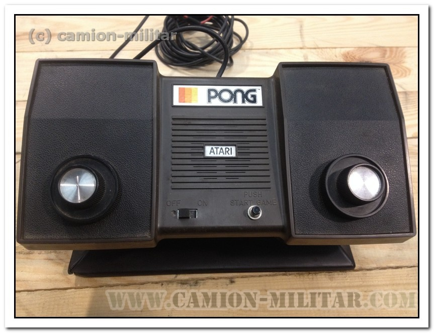

Pong es una consola creada por Atari en 1975, y la segunda videoconsola de la historia. Fue la versión doméstica de la arcade PONG también lanzada por atari unos años antes. No llevaba cartuchos, sino que tenía solo un juego, el Pong, imitando el tenis de mesa de Magnavox Odyssey